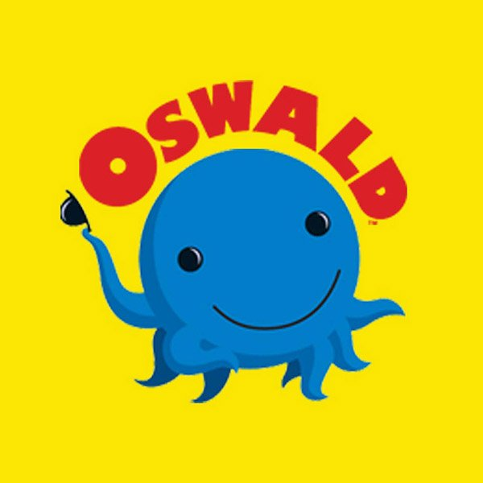
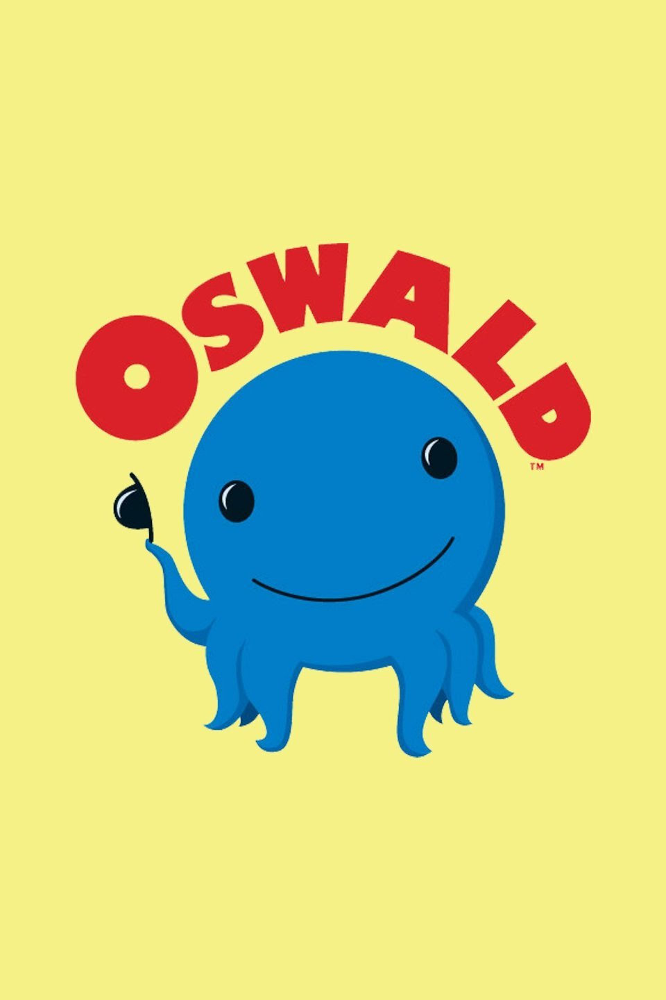
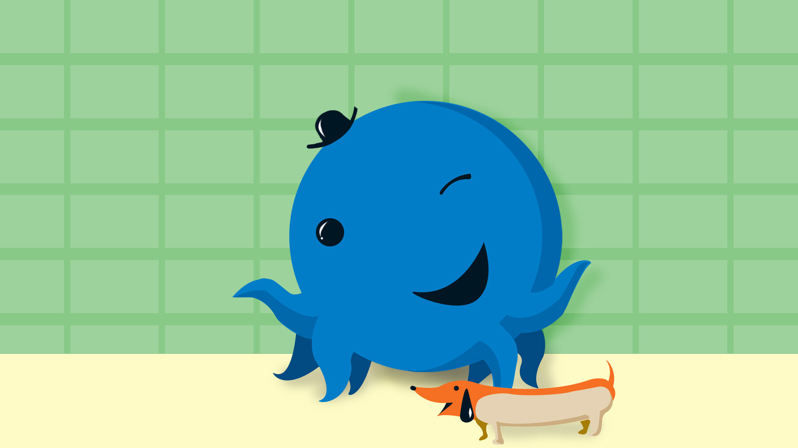
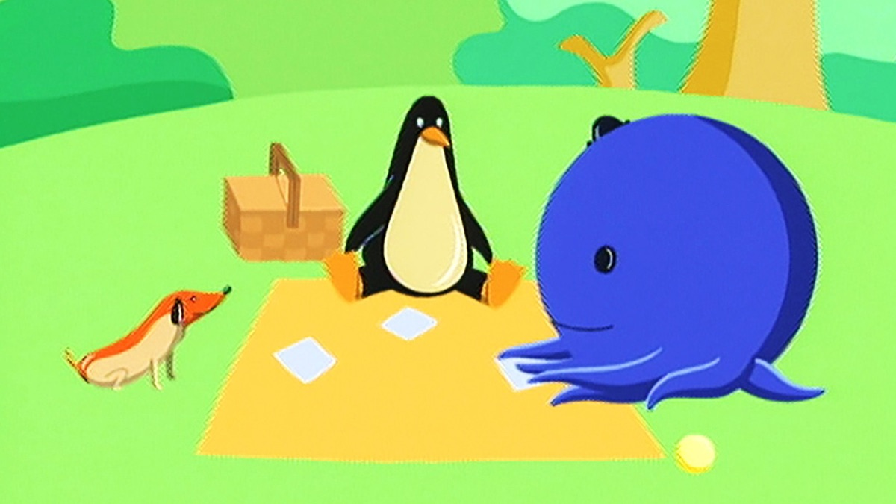

Oswald




Details
My notes
Oswald.
About
Oswald is the gentle blue octopus from the Nick Jr. animated series created by Dan Yaccarino. The show follows him and his hot-dog-shaped pet, Weenie, through everyday life in Big City. His friends include Henry the penguin and Daisy the flower.
Things to recognise
- Oswald’s blue body and small black hat.
- Weenie, the little dog shaped like a hot dog.
- Henry the penguin and Daisy the walking flower.
- The colourful, unusual buildings of Big City.
Memory details
The title has been added to my collection. No particular episode, channel, language, or viewing year has been recorded yet.
References and picture source
Additional series artwork: TVmaze. Episode artwork: Apple TV — Picnic / The Big Parade.